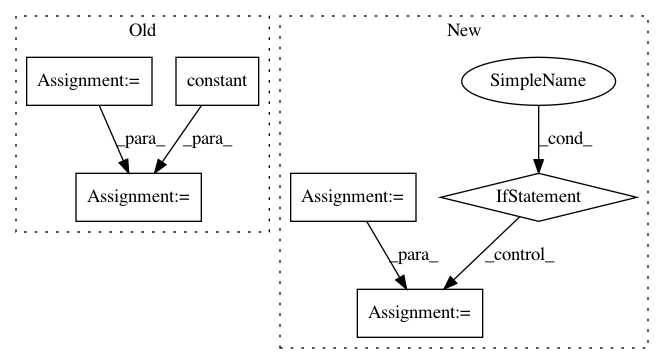

80dd4096ed186e706775adbe3663b46d719efdb0,capsulelayers.py,CapsuleLayer,call,#CapsuleLayer#Any#,94
Before Change
b = b + K.sum(inputs_hat * outputs, [0, -2, -1])
return [i-1, b, outputs]
cond = lambda i, b, inputs_hat: i > 0
loop_vars = [K.constant(self.num_routing), self.bias, K.sum(inputs_hat, 1, keepdims=True)]
_, self.bias, outputs = tf.while_loop(cond, body, loop_vars)
// Routing algorithm V2. Seems not right. This may duplicate tensors by self.num_routing times.
for _ in range(self.num_routing):
After Change
c_expand = K.expand_dims(K.expand_dims(K.expand_dims(c, 2), 2), 0)
outputs = K.sum(c_expand * inputs_hat, 1, keepdims=True)
outputs = squash(outputs)
self.bias = K.update(self.bias, self.bias + K.sum(inputs_hat * outputs, [0, -2, -1]))
// Handling with no routing scenario. Prior bias will always be zero.
if self.num_routing == 0:
c = K.softmax(self.bias)
c_expand = K.expand_dims(K.expand_dims(K.expand_dims(c, 2), 2), 0)
outputs = squash(K.sum(c_expand * inputs_hat, 1, keepdims=True))
return K.reshape(outputs, [-1, self.num_capsule, self.dim_vector])
def compute_output_shape(self, input_shape):
return tuple([None, self.num_capsule, self.dim_vector])
In pattern: SUPERPATTERN
Frequency: 3
Non-data size: 6
Instances
Project Name: XifengGuo/CapsNet-Keras
Commit Name: 80dd4096ed186e706775adbe3663b46d719efdb0
Time: 2017-10-31
Author: guoxifeng1990@163.com
File Name: capsulelayers.py
Class Name: CapsuleLayer
Method Name: call
Project Name: NifTK/NiftyNet
Commit Name: d2bf5afe5895aaee163bd5efc1dc8acb9d8d59af
Time: 2017-11-05
Author: wenqi.li@ucl.ac.uk
File Name: niftynet/application/label_driven_registration.py
Class Name: RegApp
Method Name: connect_data_and_network
Project Name: keras-team/keras
Commit Name: cc0e60c1012b7c72eeb5ea0c41b8a2045177ae5e
Time: 2016-07-19
Author: francois.chollet@gmail.com
File Name: keras/backend/tensorflow_backend.py
Class Name:
Method Name: relu